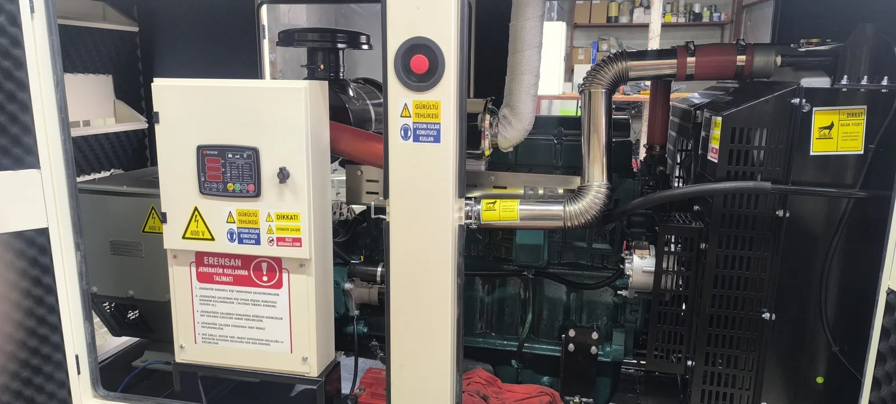

“Marş basıyor” ifadesi, marş motorunun krankı çevirdiğini anlatır. Bu durum tamamen bitmiş akü ihtimalini azaltır; fakat akünün yeterli devir sağlayamadığı olasılığını ortadan kaldırmaz. Dizel motorun çalışması için yeterli marş devri, doğru yakıt beslemesi, temiz hava, uygun sıcaklık ve kontrol sisteminin izin vermesi gerekir.
En Sık Karşılaşılan Nedenler
- Yakıt seviyesinin düşük olması: Gösterge veya seviye sensörü hatalı okuyabilir; eğimli zemin kullanılabilir yakıtı etkileyebilir.
- Yakıt vanasının kapalı kalması: Bakım ya da sevkiyat sonrası hat üzerindeki vana kapatılmış olabilir. Vana konumu yalnızca cihazın şeması ve etiketi biliniyorsa gözle kontrol edilmelidir.
- Yakıt hattında hava veya tıkanma: Depo tamamen boşaldıysa, filtre değiştiyse ya da hat açıldıysa hava yapabilir. Hava alma işlemi modele özgüdür ve servis tarafından yapılmalıdır.
- Kirli yakıt veya tıkalı filtre: Su, tortu ve uzun depolama yakıt akışını bozabilir. Filtreyi sökmek yerine bakım geçmişi paylaşılmalıdır.
- Yetersiz marş devri: Akü motoru döndürse de zayıf akü, gevşek bağlantı veya marş motoru sorunu gereken hıza ulaşmayı engelleyebilir.
- Kontrol veya koruma kilidi: Acil durdurma, aktif alarm, sensör arızası ya da başarısız marş sayacı yeni çalıştırmayı engelleyebilir.
- Soğukta ön ısıtma sorunu: Modele göre kızdırma veya motor ısıtıcı sistemi gerekli olabilir. Bu sistemin devre dışı kalması ilk çalışmayı zorlaştırır.
- Mekanik arıza: Enjeksiyon, sıkıştırma, zamanlama veya motor içi sorunlar kullanıcı müdahalesiyle teşhis edilmez.
Kapağı Açmadan Yapılabilecek Güvenli Kontroller
- Panelde otomatik/manuel/kapalı konumunu ve aktif alarm metnini kaydedin.
- Acil durdurma butonunun basılı olmadığını dışarıdan görün; zorlayarak çevirmeyin.
- Yakıt göstergesini ve mümkünse deponun son dolum kaydını karşılaştırın.
- Cihaz çevresinde yakıt veya yağ sızıntısı, yoğun duman ya da gevşek parça olup olmadığını gözleyin.
- Son başarılı çalışma, son bakım ve arızanın hangi olaydan sonra başladığını not edin.
- Panelde “overcrank / başarısız marş” uyarısı varsa tekrar tekrar resetlemeyin.
Motor kapalı olsa bile otomatik moddaki jeneratör uzaktan çalışabilir. Elektrik panosunu, yakıt hattını veya akü bağlantısını açmak eğitimli personelin işidir.
Hangi Müdahaleler Denenmemeli?
- Enjektör borusunu gevşeterek yakıt aramak
- Emme hattına eter veya yanıcı başlangıç spreyi sıkmak
- Sensör kablosunu köprülemek ya da koruma şalterini devre dışı bırakmak
- Aküyü rastgele başka bir araçla takviye etmek
- Alarm nedenini bulmadan arka arkaya uzun marş denemeleri yapmak
Bu işlemler yangın, patlama, yakıt püskürmesi, beklenmedik çalışma veya motor hasarı riski doğurur. Üretici kılavuzundaki kullanıcı adımları dışına çıkılmamalıdır.
Servise Hangi Bilgiler Gönderilmeli?
- Jeneratör marka-modeli ve motor etiketi fotoğrafı
- Kontrol panelindeki tam alarm metni veya kodu
- Marşın hızlı mı yavaş mı döndüğü ve kaç deneme yaptığı
- Dumanın olup olmadığı ve varsa rengi
- Yakıtın son dolum tarihi, son bakım ve son başarılı test zamanı
- İlçe, açık adres ve sahaya erişim bilgisi
Mersin'de yerinde değerlendirme için jeneratör teknik servis sayfamızı; motor veya yakıt sistemi müdahalesi için jeneratör onarım hizmetimizi inceleyebilirsiniz. Genel başlangıç kontrolleri için jeneratör çalışmıyor rehberi de yardımcı olur.
Üretici Kaynakları ve Model Farkı
Cummins kullanım kılavuzları, başarısız marş uyarılarının ekrandan okunmasını ve tekrarlanan marşlar arasında marş motorunun korunmasını vurgular. Caterpillar'ın kullanıcı yardım sayfası da yakıt, yağ seviyesi, kontrol konumu ve görsel hasar gibi temel kontrollerden sonra yetkili servise başvurulmasını önerir. Bu kaynaklardaki adımlar belirli ürün gruplarına aittir; sabit sanayi jeneratöründe cihazın kendi kılavuzu esas alınmalıdır.
Caterpillar: jeneratör çalışmıyorsa temel kontroller ve Cummins jeneratör kullanım ve arıza kılavuzu teknik kaynak olarak incelenebilir.